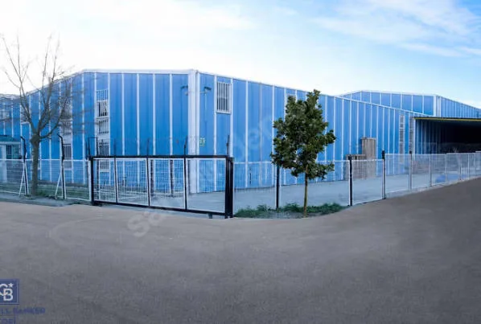

Sancaktepe Samandıra Fabrika / Depo
- 2.222 m²Arsa
- 1.650 m²Üretim/depo
- 220 m²Ofis
Teknik bilgileri incele
- 450 m² açık bahçe ve çalışma alanı
- 150 m² açık otopark
- Depo, lojistik, üretim, showroom ve operasyon merkezi kullanımları
- Şirket adına kayıtlı; KDV faturası bilgisi katalogda yer alıyor